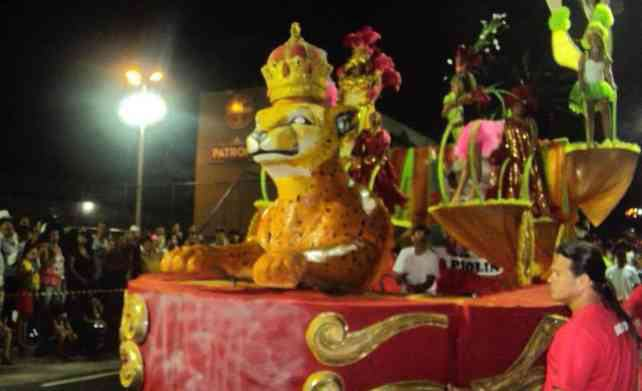
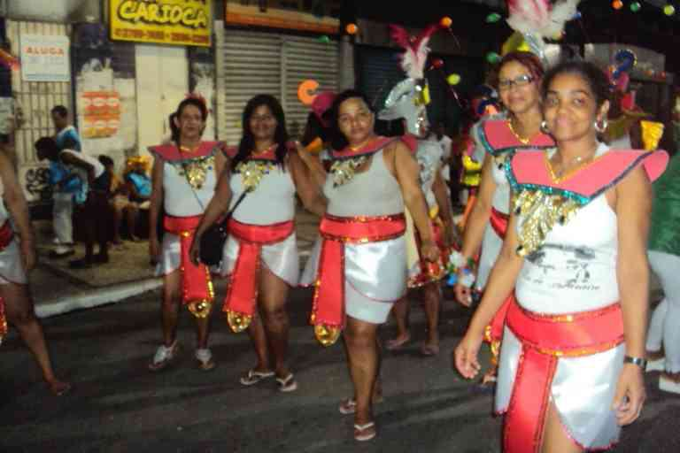
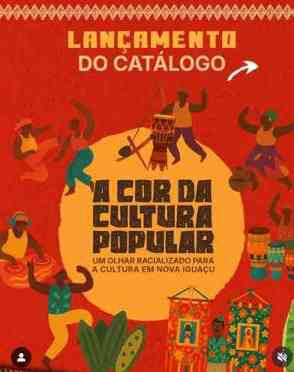
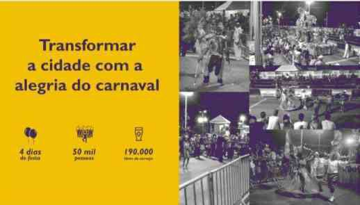

União dos Blocos de Nova Iguaçu
Projeto nº 34084, com registros de blocos e atividades culturais apoiadas pelo Governo do Estado do Rio de Janeiro.
Ver dossiê →Desde 2013, a LUBESNI atua na organização, articulação e valorização das agremiações carnavalescas de Nova Iguaçu, preservando histórias, fortalecendo grupos e criando caminhos para o futuro da cultura popular.
A LUBESNI reúne escolas de samba, blocos, afoxés e outras agremiações, articulando memória, representação institucional, ações culturais e formação.
A entidade foi fundada em 3 de setembro de 2013 e passou a ocupar papel central na organização do Carnaval de Nova Iguaçu. A atualização institucional de 2026 registra 17 escolas filiadas, além de blocos, afoxés e outras agremiações que integram a rede cultural e carnavalesca articulada pela LUBESNI.
A presidência é exercida por Arlene de Katendê. A atuação da Liga se conecta à memória do samba iguaçuano, às tradições afro-brasileiras, às culturas populares e às ações formativas desenvolvidas por grupos do território.

Constituição da Liga da União de Blocos e Escolas de Samba de Nova Iguaçu em 03 de setembro de 2013.
O portfólio registra o Carnaval de 2014 como o primeiro sob responsabilidade da LUBESNI, com desfiles na Via Light.
Projeto nº 34084, realizado com apoio do Governo do Estado do Rio de Janeiro, por meio da SECEC-RJ e do Edital Bloco nas Ruas RJ.
O acervo registra participação de agremiações em ações de contrapartida, oficinas e atividades culturais, além de ações vinculadas a coletivos do território.
Cadastro como Organização da Sociedade Civil junto à Prefeitura de Nova Iguaçu e registro dos desfiles de Rosa do Valverde, Arrastão do Ipiranga, União de Miguel Couto e Leão de Nova Iguaçu.
Projetos executados, circulação de grupos, ações de contrapartida e iniciativas em desenvolvimento para ampliar impacto e sustentabilidade.
Projeto nº 34084, com registros de blocos e atividades culturais apoiadas pelo Governo do Estado do Rio de Janeiro.
Ver dossiê →Registros do Aquilombaque e de oficinas com mestres e contramestres de maracatu, além de circulação e apresentações.
Ver evidências →Proposta voltada a reaproveitamento de materiais, identidade cultural e ações circulares nas associações filiadas no território de Nova Iguaçu.
Conhecer proposta →Presença histórica na abertura do Carnaval de Nova Iguaçu e referência de cultura afro-brasileira.
Agremiação com trajetória no Carnaval Iguaçuano e título no grupo de acesso em 2015.
Agremiação histórica de Santa Eugênia, fundada em 1968.
Bloco de embalo de Nova Iguaçu, integrante do acervo institucional.
Registros extraídos do portfólio institucional da LUBESNI e de seus grupos parceiros e filiados.




O site foi estruturado para reunir trajetória, evidências, links públicos e o portfólio original em um único ambiente institucional.